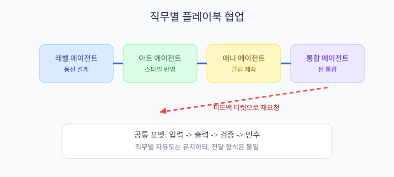

MSSQL·Mongo·로그 파이프라인을 에이전트로 운영하는 기준
정본 분리, 지연 허용치, 정합성 검증을 한 루프로 묶는 방법
Part 1. 왜 이 주제가 중요한가?
이 문서의 한 줄 목표는 뭐야?
정본과 지연 허용치를 먼저 고정한다
핵심: 추상 판단을 측정 가능한 기준으로 바꾸면 에이전트가 멈추지 않는다.
시각화: 기준 없는 반복의 한계

기준이 없으면 작업은 많아도 누적 품질이 낮아진다.
지금까지 한 줄 요약: 자동화 전에 기준어부터 고정해야 한다.
Part 2. 초보자가 먼저 알아야 할 용어
작업 계약 (Task Contract)은 뭐야?
정의: 입력/출력/검증/인수 조건을 미리 적는 문서
왜 필요: 역할 간 오해를 줄이려고
없으면: 수정 요청이 되풀이됨
검증 게이트 (Validation Gate)은 뭐야?
정의: 다음 단계로 넘어가기 전 통과 조건
왜 필요: 불량 결과 확산을 막으려고
없으면: 야간 결과가 아침에 대거 반려됨
회고 루프 (Postmortem Loop)은 뭐야?
정의: 실패 원인을 다음 규칙으로 바꾸는 과정
왜 필요: 같은 실수를 줄이려고
없으면: 비슷한 실패를 반복함
| 용어 | 10초 정의 | 왜 필요한가 | 없으면 생기는 문제 |
|---|---|---|---|
| 작업 계약 (Task Contract) | 입력/출력/검증/인수 조건을 미리 적는 문서 | 역할 간 오해를 줄이려고 | 수정 요청이 되풀이됨 |
| 검증 게이트 (Validation Gate) | 다음 단계로 넘어가기 전 통과 조건 | 불량 결과 확산을 막으려고 | 야간 결과가 아침에 대거 반려됨 |
| 회고 루프 (Postmortem Loop) | 실패 원인을 다음 규칙으로 바꾸는 과정 | 같은 실수를 줄이려고 | 비슷한 실패를 반복함 |
시각화: 용어 정렬과 협업 속도

같은 단어를 같은 뜻으로 쓰게 만들면 오해가 크게 줄어든다.
지금까지 한 줄 요약: 용어 정렬은 가장 빠른 생산성 개선이다.
Part 3. 어떤 지표를 걸어야 자동 평가가 되나?
지표는 많을수록 좋아?
처음엔 핵심 5개면 충분해.
측정 가능 + 행동 연결 가능 지표만 남겨야 운영이 가벼워진다.
| 지표 | 정의 | 운영 기준 |
|---|---|---|
| MSSQL 쿼리 P95 | 정본과 지연 허용치를 먼저 고정한다 | 팀 기준값 설정 |
| Mongo 적재 지연 | 정본과 지연 허용치를 먼저 고정한다 | 팀 기준값 설정 |
| 로그 수집 지연 | 정본과 지연 허용치를 먼저 고정한다 | 팀 기준값 설정 |
| 정합성 불일치 건수 | 정본과 지연 허용치를 먼저 고정한다 | 팀 기준값 설정 |
| 오탐 알림률 | 정본과 지연 허용치를 먼저 고정한다 | 팀 기준값 설정 |
[검증 게이트 예시]
1) PR + 야간 배치에서 자동 측정
2) 기준 미달은 자동 반려
3) 동일 시나리오 재검증 후 통과 시 병합
4) 로그와 변경 이력 동시 저장
시각화: 지표 기반 판정 루프

지표는 보고용 숫자가 아니라 다음 행동을 정하는 기준이다.
지금까지 한 줄 요약: 지표가 있어야 에이전트가 스스로 통과/반려를 판단한다.
Part 4. 역할 분담으로 어떻게 협업하나?
| 역할 | 입력 | 출력 | 검증 |
|---|---|---|---|
| Planner | 우선순위 큐 | 작업 계약서 | 착수 조건 확인 |
| Specialist | 작업 계약서 | 변경 산출물 | 체크리스트 |
| Critic | 산출물+로그 | 통과/반려 | Validation Gate |
| Integrator | 통과 산출물 | 통합 반영본 | 회귀 테스트 |
[실행 플레이북]
1) 목표 지표 5개 고정
2) 작업 계약서 작성
3) 역할별 에이전트 병렬 실행
4) Validation Gate로 통과/반려 판정
5) Postmortem Loop로 다음 규칙 업데이트
시각화: 멀티 에이전트 인수인계

자율성은 유지하되 인수 포맷은 고정해야 팀처럼 움직인다.
Part 5. 초보자 학습 순서
| 주차 | 학습/실행 항목 | 산출물 |
|---|---|---|
| 1주차 | 용어 정의 + 범위 고정 | 작업 계약서 v1 |
| 2주차 | 핵심 지표 5개 설계 | 지표 기준표 |
| 3주차 | 자동 검증 루프 연결 | 검증 대시보드 |
| 4주차 | 야간 운영 + 회고 규칙화 | 운영 런북 |
시각화: 학습 단계에서 운영 단계로

순서를 지키면 초보자도 에이전트 운영 루프를 구축할 수 있다.
📌 핵심 정리
- 핵심: 정본과 지연 허용치를 먼저 고정한다
- 용어: Task Contract/Validation Gate/Postmortem Loop를 먼저 정리한다
- 지표: 핵심 5개 지표를 고정해 자동 판정을 만든다
- 운영: 야간 실행 후 아침 회고로 규칙을 갱신한다